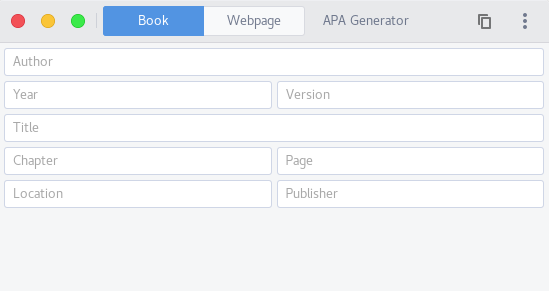
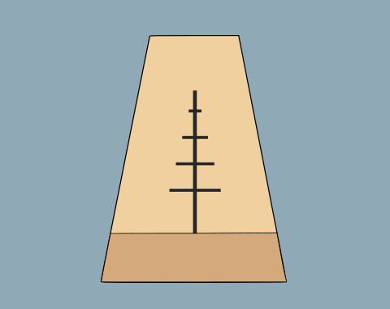

The source code for all these applications is available on GitHub. Hover over each application to see it‘s GitHub link.
GetIt
GetIt is a simple to use open source HTTP client

APA Generator
APA Generator is a small configurable utility to generate APA sources for your reports
Simple Convert
Simple Convert is a small application to convert multiple filetypes to another file type

Advanced Metronome
Advanced Metronome is a small application in which you can set multiple measures with their own speed, time-signature and number of repeats. This gives you the ability to practice songs that have multiple speeds and/or time-signatures.
Hash Generator
Hash Generator is a small application to generate multiple hashes from any input string you give it. The code is designed to easily add new hashing algorithms so if you're missing anything feel free to open a pull-request or create an issue.